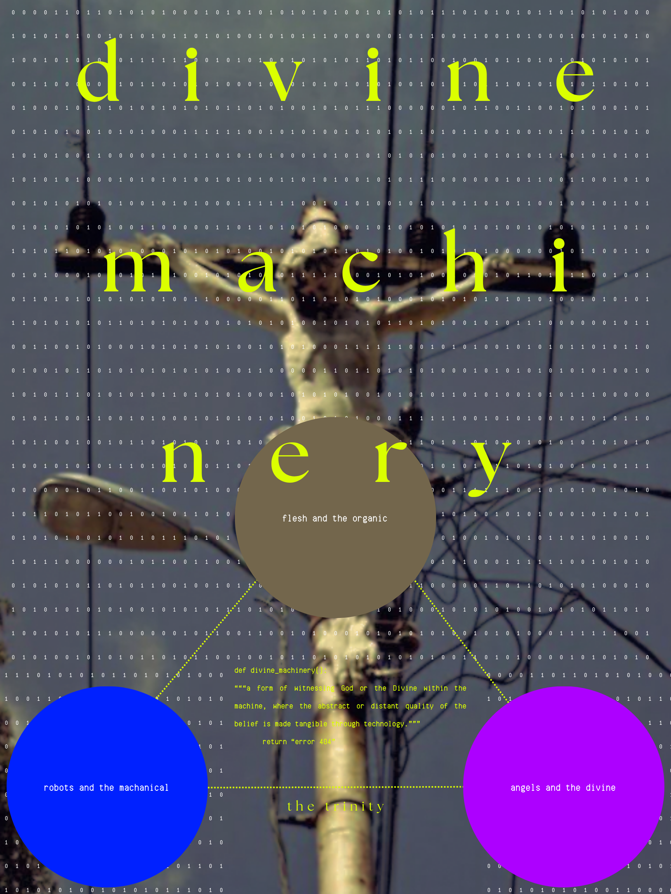

Digital exhibition — homepage
Divine Machinery
A study on divine machinery.
This heatmap compares a small group of artworks associated with the concept of Divine Machinery across eight recurring qualities, including sacred imagery, technological awe, bodily transformation, ritual, and digital recursion. Each work is scored from 0 (absent) to 4 (defining). Rather than presenting Divine Machinery as a unified art movement, the visualization shows how the category emerges through overlapping combinations of spiritual, technological, and bodily themes.
The Trilogy (Canva Infographic)
This infographic presents Divine Machinery as a trinity of the organic, the mechanical, and the divine. The three connected circles frame the aesthetic as a meeting point between flesh, machines, and spiritual symbolism, suggesting that technology can make distant or abstract ideas of divinity feel tangible. Visually, the suspended mechanical figure merges crucifixion imagery with wires and machinery, while the field of binary code places the sacred image inside a digital environment. The luminous typography, saturated circles, and network-like lines create a tension between reverence and artificiality, giving the composition the feeling of a technological altar or diagram of a new machine-based faith.
